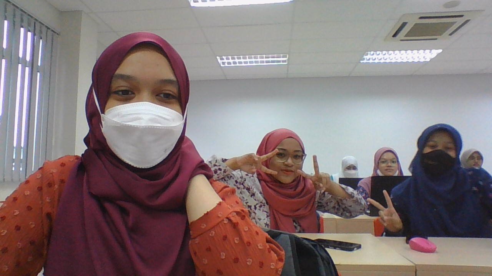
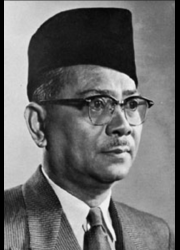

MYSELF
.png)

Introduction
.jpeg)
Tunku Abdul Rahman Putra Al-Haj, “Bapa Kemerdekaan” Malaysia, mengiktiraf pentingnya memupuk kerjasama di kalangan pelbagai kaum
sebagai cara utama untuk mengatasi cabaran politik. Anak ketujuh Sultan Kedah ke-25, Sultan Abdul Hamid Halim Shah,
dan Che ‘Menjalara, Tunku telah bertanding – dan menang – pemilihan Presiden Pertubuhan Kebangsaan Melayu Bersatu (UMNO) pada tahun 1951.
Sebagai Presiden UMNO, beliau menubuhkan sebuah gabungan politik dengan kaum Cina dan India, mengakibatkan kelahiran gabungan yang kini dikenali
sebagai Barisan Nasional (Barisan Nasional). Tunku telah mengetuai perundingan untuk kemerdekaan, dan pada 31 Ogos 1957, Persekutuan Tanah Melayu
mengisytiharkan kemerdekaannya dari kerajaan British, tanpa sebarang pertumpahan darah. Tunku juga telah mencadangkan penubuhan Malaysia yang
terdiri daripada Persekutuan Tanah Melayu, Singapura (yang kemudiannya keluar pada tahun 1965), Sabah, dan Sarawak, yang ditubuhkan pada 16 September 1963.
Sebagai ketua kerajaan, Tunku memberi pengiktirafan kepada agama Islam sebagai agama rasmi. Beliau berperanan penting dalam penubuhan Pertubuhan Persidangan Islam
(OIC) pada tahun 1969, di mana beliau dilantik sebagai Setiausaha Agungnya yang pertama. Pencapaian terbesar Tunku Abdul Rahman mungkin adalah pada pemupukan semangat
kegenegaraan dan kebanggan rakyat Malaysia.
TUANKU ABDUL RAHMAN PUTRA AL-HAJ

Tunku Abdul Rahman Putra Al-Haj, “Bapa Kemerdekaan” Malaysia, mengiktiraf pentingnya memupuk kerjasama di kalangan pelbagai kaum
sebagai cara utama untuk mengatasi cabaran politik. Anak ketujuh Sultan Kedah ke-25, Sultan Abdul Hamid Halim Shah,
dan Che ‘Menjalara, Tunku telah bertanding – dan menang – pemilihan Presiden Pertubuhan Kebangsaan Melayu Bersatu (UMNO) pada tahun 1951.
Sebagai Presiden UMNO, beliau menubuhkan sebuah gabungan politik dengan kaum Cina dan India, mengakibatkan kelahiran gabungan yang kini dikenali
sebagai Barisan Nasional (Barisan Nasional). Tunku telah mengetuai perundingan untuk kemerdekaan, dan pada 31 Ogos 1957, Persekutuan Tanah Melayu
mengisytiharkan kemerdekaannya dari kerajaan British, tanpa sebarang pertumpahan darah. Tunku juga telah mencadangkan penubuhan Malaysia yang
terdiri daripada Persekutuan Tanah Melayu, Singapura (yang kemudiannya keluar pada tahun 1965), Sabah, dan Sarawak, yang ditubuhkan pada 16 September 1963.
Sebagai ketua kerajaan, Tunku memberi pengiktirafan kepada agama Islam sebagai agama rasmi. Beliau berperanan penting dalam penubuhan Pertubuhan Persidangan Islam
(OIC) pada tahun 1969, di mana beliau dilantik sebagai Setiausaha Agungnya yang pertama. Pencapaian terbesar Tunku Abdul Rahman mungkin adalah pada pemupukan semangat
kegenegaraan dan kebanggan rakyat Malaysia.